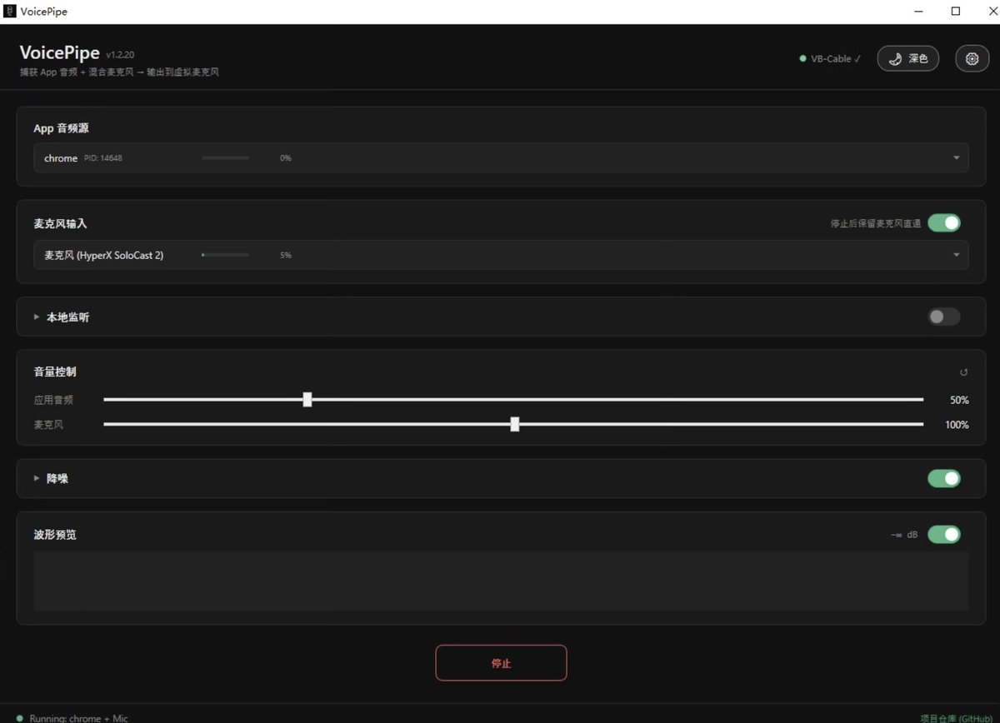

山田リョウ⛩️
@Yamada_Ryoooo
新做的项目：VoicePipe
简单来说就是像soundpad那样可以在游戏/语音聊天时放歌，不过soundpad只能放存进去的歌，VoicePipe可以直接放桌面软件如QQ音乐、Apple Music等音源，并且内置基础降噪可以降低麦克风底噪
并且操作非常简单，不像voicemeeter那样难用
如果解决了你的问题的话请给我点个star吧，谢谢了！🥰
：https://t.co/MufQSjHOOc
